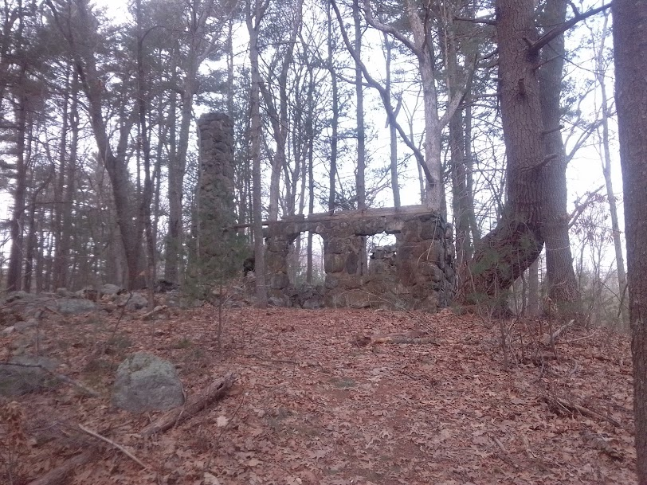
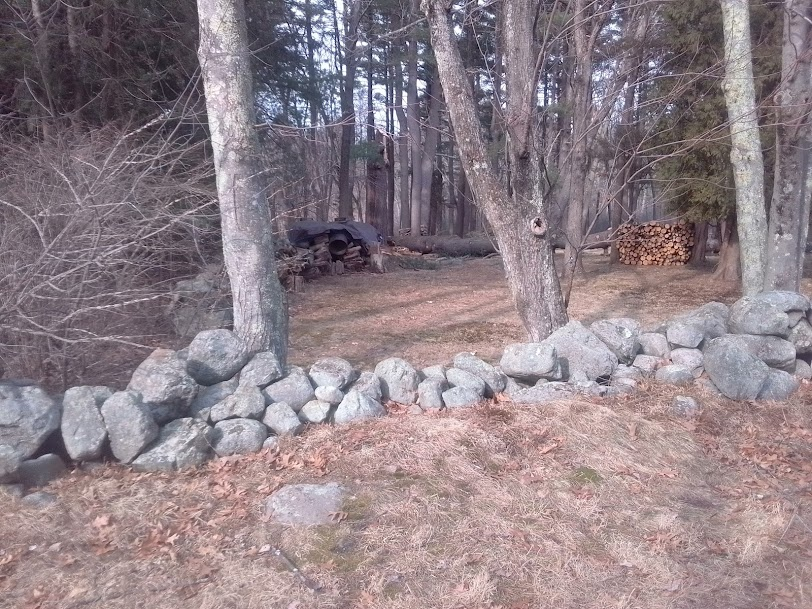
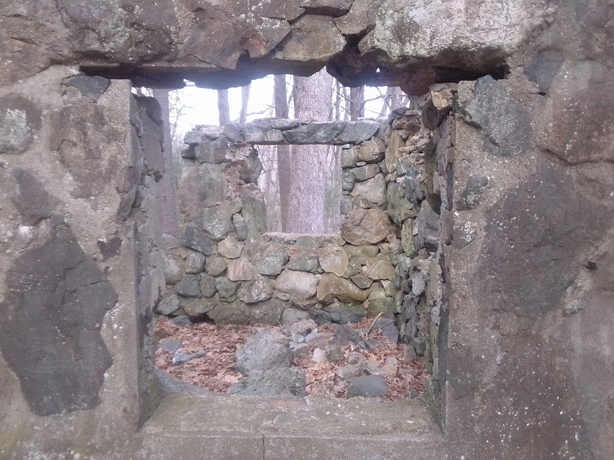
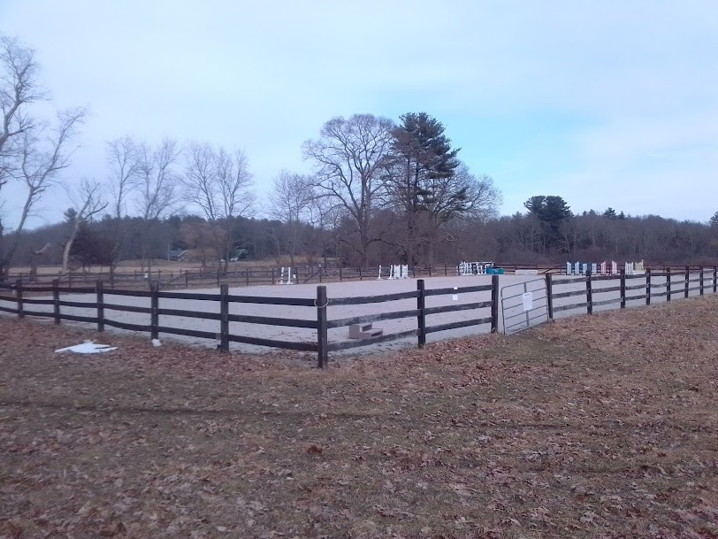
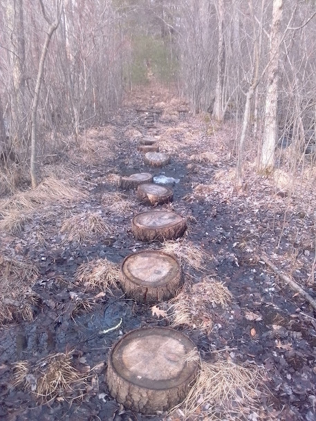

<!DOCTYPE html>
<html>
<head>
	
	<title>Treasure Map</title>

	<meta charset="utf-8" />
	<meta name="viewport" content="width=device-width, initial-scale=1.0">
	<!--<link rel="shortcut icon" type="image/x-icon" href="docs/images/favicon.ico" />-->

    <link rel="stylesheet" href="https://unpkg.com/leaflet@1.7.1/dist/leaflet.css" integrity="sha512-xodZBNTC5n17Xt2atTPuE1HxjVMSvLVW9ocqUKLsCC5CXdbqCmblAshOMAS6/keqq/sMZMZ19scR4PsZChSR7A==" crossorigin=""/>
    <script src="https://unpkg.com/leaflet@1.7.1/dist/leaflet.js" integrity="sha512-XQoYMqMTK8LvdxXYG3nZ448hOEQiglfqkJs1NOQV44cWnUrBc8PkAOcXy20w0vlaXaVUearIOBhiXZ5V3ynxwA==" crossorigin=""></script>
    <!--<script src="https://ha8tks.github.io/Leaflet.Maidenhead/src/L.Maidenhead.js"></script>-->
    <script src="./js/L.Maidenhead.js"></script>
    <script src="https://unpkg.com/leaflet-simple-map-screenshoter"></script>

    <style>
		html, body {
			height: 100%;
			margin: 0;
		}
		.leaflet-container {
			height: 400px;
			width: 600px;
			max-width: 100%;
			max-height: 100%;
		}
	</style>

	<style>body { padding: 0; margin: 0; } #map { height: 100%; width: 100vw; }</style>
</head>
<body>

<!--<div id="map" style="width: 900px; height: 450px;"></div>-->

<div id='map'></div>

<script>

function csvJSON(headers,csv){
    var lines=csv.split("\n");
    var result = [];
    //var headers=lines[0].split(",");
    for(var i=1;i<lines.length;i++){
        var obj = {};
        var currentline=lines[i].split(",");
        for(var j=0;j<headers.length;j++){
            obj[headers[j]] = currentline[j];
        }
        result.push(obj);
    }
    //return result; //JavaScript object
    return result;
    //return JSON.stringify(result); //JSON
}
</script>
<script>
    function median(values){
  if(values.length ===0) throw new Error("No inputs");

  values.sort(function(a,b){
    return a-b;
  });

  var half = Math.floor(values.length / 2);
  
  if (values.length % 2)
    return values[half];
  
  return (values[half - 1] + values[half]) / 2.0;
}
</script>
<script>

    // conant
	var start_lat=42.41208137430952;
	var start_lon=-71.29818102489375;
	
	// parker	
	//var start_lat = 42.42177320792855;
	//var start_lon = -71.14140650080418;

    //var start_lat=44.42849861396812;
    //var start_lon=-69.00385950557286;
    var start_zoom = 15;
    var max_zoom = 19;
/*
	var map = L.map('map').setView([start_lat,start_lon], start_zoom);
*/
var defaultURL = 'https://api.mapbox.com/styles/v1/{id}/tiles/{z}/{x}/{y}?access_token=pk.eyJ1IjoibWFwYm94IiwiYSI6ImNpejY4NXVycTA2emYycXBndHRqcmZ3N3gifQ.rJcFIG214AriISLbB6B5aw';

var topoURL = 'https://{s}.tile.opentopomap.org/{z}/{x}/{y}.png';

var tonerURL = 'https://stamen-tiles.a.ssl.fastly.net/toner/{z}/{x}/{y}.png';

var terrainURL = 'https://stamen-tiles.a.ssl.fastly.net/terrain/{z}/{x}/{y}.jpg'

var osmTiles = L.tileLayer(defaultURL, 
{maxZoom: max_zoom,
		attribution: 'Map data &copy; <a href="https://www.openstreetmap.org/copyright">OpenStreetMap</a> contributors, ' +
			'Imagery © <a href="https://www.mapbox.com/">Mapbox</a>',
		id: 'mapbox/streets-v11',
		tileSize: 512,
		zoomOffset: -1
    });

    var tonerTiles = L.tileLayer(tonerURL, 
{maxZoom: max_zoom,
		attribution: 'Map data &copy; <a href="https://www.openstreetmap.org/copyright">OpenStreetMap</a> contributors, ' +
			'Imagery © <a href="https://www.mapbox.com/">Mapbox</a>',
		id: 'mapbox/streets-v11',
		tileSize: 512,
		zoomOffset: -1
    });

    var mbAttr = 'Map data &copy; <a href="https://www.openstreetmap.org/copyright">OpenStreetMap</a> contributors, Imagery © <a href="https://www.mapbox.com/">Mapbox</a>';
	var mbUrl = 'https://api.mapbox.com/styles/v1/{id}/tiles/{z}/{x}/{y}?access_token=pk.eyJ1IjoibWFwYm94IiwiYSI6ImNpejY4NXVycTA2emYycXBndHRqcmZ3N3gifQ.rJcFIG214AriISLbB6B5aw';

	var grayscale = L.tileLayer(mbUrl, {id: 'mapbox/light-v9', tileSize: 512, zoomOffset: -1, attribution: mbAttr});
    var streets = L.tileLayer(mbUrl, {id: 'mapbox/streets-v11', tileSize: 512, zoomOffset: -1, attribution: mbAttr});
    
    mbAttr = 'Tiles &copy; Esri &mdash; Source: Esri, i-cubed, USDA, USGS, AEX, GeoEye, Getmapping, Aerogrid, IGN, IGP, UPR-EGP, and the GIS User Community'
mbUrl = 'https://server.arcgisonline.com/ArcGIS/rest/services/World_Imagery/MapServer/tile/{z}/{y}/{x}'

var esri = L.tileLayer(mbUrl, {id: 'esri', tileSize: 512, zoomOffset: -1, attribution: mbAttr})

var googleStreets = L.tileLayer('http://{s}.google.com/vt/lyrs=m&x={x}&y={y}&z={z}',{
    maxZoom: 20,
    subdomains:['mt0','mt1','mt2','mt3']
});

var googleHybrid = L.tileLayer('http://{s}.google.com/vt/lyrs=s,h&x={x}&y={y}&z={z}',{
    maxZoom: 20,
    subdomains:['mt0','mt1','mt2','mt3']
});

var googleSat = L.tileLayer('http://{s}.google.com/vt/lyrs=s&x={x}&y={y}&z={z}',{
    maxZoom: 20,
    subdomains:['mt0','mt1','mt2','mt3']
});

var googleTerrain = L.tileLayer('http://{s}.google.com/vt/lyrs=p&x={x}&y={y}&z={z}',{
    maxZoom: 20,
    subdomains:['mt0','mt1','mt2','mt3']
});

fetch('GPS.CSV')
  .then(response => response.text())
  .then(text => {

      //console.log(text)
      headers = ["lat","lon","alt"];
      jsonfile = csvJSON(headers,text);
      console.log(jsonfile);


    var map = L.map('map', {
		center: [start_lat, start_lon],
		zoom: 10,
		layers: [streets]
	});

    // placeholders for the L.marker and L.circle representing user's current position and accuracy    
   /* 
    var current_position, current_accuracy;

    function onLocationFound(e) {
      // if position defined, then remove the existing position marker and accuracy circle from the map
      if (current_position) {
          map.removeLayer(current_position);
          map.removeLayer(current_accuracy);
      }

      var radius = e.accuracy / 2;

      current_position = L.circle([lat, lon], 20, {
		color: 'blue',
		fillColor: 'blue',
		fillOpacity: 0.5
}).addTo(map);

      //current_position = L.marker(e.latlng).addTo(map)
        //.bindPopup("You are within " + radius + " meters from this point").openPopup();

      //current_accuracy = L.circle(e.latlng, radius).addTo(map);
    }

    function onLocationError(e) {
      alert(e.message);
    }

    map.on('locationfound', onLocationFound);
    map.on('locationerror', onLocationError);
    // wrap map.locate in a function    
    function locate() {
      map.locate({setView: false, maxZoom: 16});
    }

    // call locate every 3 seconds... forever
    setInterval(locate, 3000);
*/

/*
    gridGroup = L.layerGroup();
this.gridGroup.addLayer(
    L.maidenhead({
                //color : 'rgba(255, 0, 0, 0.4)'
                color : 'rgba(0, 0, 0, 1)'
            }));
    gridGroup.addTo(map);
*/


var ave_lat=0;
var ave_lon=0;
var lats = [];
var lons = [];

var min_lat = parseFloat(jsonfile[0].lat)/10000000;
var max_lat = min_lat;

for(var i=1;i<(jsonfile.length-1);i+=10){

lat = parseFloat(jsonfile[i].lat)/10000000;
lon = parseFloat(jsonfile[i].lon)/10000000;

if (lat < min_lat) {
    min_lat = lat
}
if (lat > max_lat) {
    max_lat = lat 
}

lats.push(lat);
lons.push(lon);
ave_lat=ave_lat+lat;
ave_lon=ave_lon+lon;

//console.log("lat:",lat);

if ((i < 1847) || (i > 1970)) {

if ((i < 400) || (i > 880))  {
L.circle([lat, lon], 1, {
		color: 'green',
		fillColor: '#f03',
		fillOpacity: 0.5
}).addTo(map).bindPopup(i.toString());


var greenIcon = new L.Icon({
  iconUrl: 'https://raw.githubusercontent.com/pointhi/leaflet-color-markers/master/img/marker-icon-2x-green.png',
  shadowUrl: 'https://cdnjs.cloudflare.com/ajax/libs/leaflet/0.7.7/images/marker-shadow.png',
  iconSize: [25, 41],
  iconAnchor: [12, 41],
  popupAnchor: [1, -34],
  shadowSize: [41, 41]
});


if (i==881) {

    var photoImg = '';

    L.marker([lat, lon],{icon: greenIcon}).addTo(map)
        .bindPopup("<center>Pigeon House</center>" + "</br>"+ photoImg);
		//.bindPopup("<b>Hello world!</b><br />I am a popup.")

}

// stone wall 
if (i==161) {

var photoImg = '';

L.marker([lat, lon],{icon: greenIcon}).addTo(map)
    .bindPopup("<center>Stone Wall</center>" + "</br>"+ photoImg);
    //.bindPopup("<b>Hello world!</b><br />I am a popup.")

}

if (i==2051) {

var photoImg = '';

L.marker([lat, lon],{icon: greenIcon}).addTo(map)
    .bindPopup("<center>Brook Bridge</center>" + "</br>"+ photoImg);
    //.bindPopup("<b>Hello world!</b><br />I am a popup.")

}

// horse ring
if (i==1671) {

var photoImg = '';

L.marker([lat, lon],{icon: greenIcon}).addTo(map)
    .bindPopup("<center>Horse Ring</center>" + "</br>"+ photoImg);
    //.bindPopup("<b>Hello world!</b><br />I am a popup.")

}

// victor path 
if (i==281) {

var photoImg = '';

L.marker([lat, lon],{icon: greenIcon}).addTo(map)
    .bindPopup("<center>Stump path</center>" + "</br>"+ photoImg);
    //.bindPopup("<b>Hello world!</b><br />I am a popup.")

}

if (i==1471) {

var photoImg = '';

L.marker([lat, lon],{icon: greenIcon}).addTo(map)
    .bindPopup("<center>Horse Bridge</center>" + "</br>"+ photoImg);
    //.bindPopup("<b>Hello world!</b><br />I am a popup.")

}


}
}
}

ave_lat=ave_lat/(jsonfile.length-1);
ave_lon=ave_lon/(jsonfile.length-1);

median_lat = median(lats);
median_lon = median(lons);

//median_lat = (max_lat-min_lat)/2. + min_lat;

console.log(median_lat,median_lon);
console.log(ave_lat,ave_lon);


//L.marker([median_lat, median_lon],{icon: greenIcon}).addTo(map);

map.setView(new L.LatLng(median_lat,median_lon),15);
//map.setView(new L.LatLng(ave_lat,ave_lon),15);
})


</script>


</body>
</html>